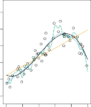
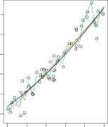

Non-Parametric Methods
비모수적 방법론(Non-Parametric Methods)

FIGURE 2.5. A smooth thin-plate spline fit to the Income data from Figure 2.3 is shown in yellow; the observations are displayed in red. Splines are discussed in Chapter 7.
그림 2.5. 이 그림 2.3의 붉은 점으로 나타난 개별 Income 데이터 관측 집단 형상에 대하여 한 차원 발전된, 이번에는 훈련 유연성을 크게 늘린 매끄러운 얇은 판 스플라인(smooth thin-plate spline) 평면 모델 표면 구조를 적합한 시도 형태 모습이 이번의 두 번째 노란색 지표 면으로 펼쳐져 나타나 수록되어 표시되어 있습니다; 분포된 표본 관찰 요소 군집 묶음 점들의 현황은 이전과 아주 똑같이 모두 일관된 빨간색 점 형태로 전시 기재되어 직관적으로 나타내어졌습니다. 시도된 유연한 이런 복잡성 높은 여러 스플라인 모형 기법들에 대한 광범위한 고찰적인 논의 형태 등은 제7장에서 깊이 다룹니다.
Non-parametric methods do not make explicit assumptions about the functional form of f .
비모수적(non-parametric) 방법은 함수의 추정 형태 f 에 대해 사전에 모양을 결정짓는 어떠한 명시적 가정도 함부로 취하지 않습니다.
Instead they seek an estimate of f that gets as close to the data points as possible without being too rough or wiggly.
대신 이러한 기법들은 분석 과정 내내 도출되는 결과 모델면이 너무 들쭉날쭉 거칠거나 심하게 꼬여 꿈틀거리지 않는(wiggly) 합당한 선을 지키면서, 동시에 주어진 현실 실체 데이터 포인트 분포들에 가능한 한 가장 가깝게 근접하게 도달하는 성질의 f 추정치를 끈질기게 모색하고 찾습니다.
Such approaches can have a major advantage over parametric approaches: by avoiding the assumption of a particular functional form for f , they have the potential to accurately fit a wider range of possible shapes for f .
이러한 개방적인 접근 방식은 기존의 경직된 모수적 접근 방식에 비해 상당히 큰 우수한 패러다임적 주요 이점을 지닐 수 있습니다: f 에 대해 특정한 함수 형태(functional form) 형태가 있다는 섣부른 가정을 완전히 회피함으로써, 결과론적으로 측정 함수 f 에 대해 발생 가능한 훨씬 더 광범위하고 다양한 범위 형태의 함수 모양 가능성들을 정확하게 수용하고 적합시킬 수 있는 강력한 잠재성(potential)을 지니게 됩니다.
Any parametric approach brings with it the possibility that the functional form used to estimate f is very different from the true f , in which case the resulting model will not fit the data well.
그 어떠한 유형의 모수적 접근 방식이든간에 그것은 필연적으로 자신들이 f 를 추정하기 위해 초기에 채택하여 기용한 특정 함수 모형 형태 자체가 실제 기저의 진실된 f 와는 너무나 심하게 완전히 다를 수 있다는 아주 위험한 가능성을 본질적으로 내포하여 초래하며, 이러한 불일치 상황 경우에 궁극적으로 도출된 모델은 당연하게도 데이터의 진실을 설명해내지 못하고 제대로 훌륭히 적합되지 않을 것입니다.
In contrast, non-parametric approaches completely avoid this danger, since essentially no assumption about the form of f is made.
이와 극명하게 대조적으로, 비모수적 접근법 기법들은 애초에 함수 f 의 형태 구조에 대해 그 어떠한 근원적인 가정도 세우지 않기 때문에 이러한 형상 불일치의 잠재적 치명 위험성을 아주 철저하고 완벽하게 배제하여 회피합니다.
But non-parametric approaches do suffer from a major disadvantage: since they do not reduce the problem of estimating f to a small number of parameters, a very large number of observations (far more than is typically needed for a parametric approach) is required in order to obtain an accurate estimate for f .
하지만 유감스럽게도 비모수적 접근법들 역시 치명적인 주요 단점을 겪게 됩니다: 이 기법은 f 를 추론하고 추정해 내는 방대하고 지난한 문제를 단지 소수의 한정된 파라미터 매개변수 몇 개를 추정하는 간단한 문제로 결코 간소화시켜 축소하지 않기 때문에, 이에 수반하여 아주 정확하고 정교한 수준의 f 에 대한 추정치 결과를 성공적으로 얻어내기 위해서는 (일반적인 모수적 접근법 모델에서 보편적으로 요구되는 정도보다 훨씬 더 아득히 많은) 엄청나게 매우 방대한 양의 아주 큰 수량의 관측 데이터 수집 건수가 절대적으로 강력하게 요구됩니다.
An example of a non-parametric approach to fitting the Income data is shown in Figure 2.5.
비모수적 기법을 사용하여 앞선 기존 논의 대상이었던 Income 데이터 분포에 다방면으로 유연하게 적합하는 전형적인 시도 접근 사례 하나가 그림 2.5에 선명하게 잘 나타나 보여집니다.
A thin-plate spline is used to estimate f .
이 경우 투입된 기술로서 f 를 유연하게 추정하기 위해 꽤 부드러운 성질인 얇은 판 스플라인(thin-plate spline) 이라는 고등 분석 기법이 도입 적용되어 함께 사용되었습니다.
This approach does not impose any pre-specified model on f .
이러한 특수 접근법은 추정될 대상 목표인 f 에 그 어떤 사전 정의된 특정 구조 명시적 모델 구조 제약의 틀도 강제로 절대 부과하지 않습니다.
It instead attempts to produce an estimate for f that is as close as possible to the observed data, subject to the fit—that is, the yellow surface in Figure 2.5—being smooth .
강제된 규칙 제약 대신, 이 기법은 단지 도출될 결과 모델 적합치—즉 그림 2.5에서 도출되어 전시된 저 구부러지고 휘어진 유연한 노란색 표면층—가 어느 정도 적당히 매끄러운 부드러운(smooth) 속성을 유지해야 함을 전제로 하면서 동시에 관찰 분포 데이터들의 각각의 점 위치에 대해 가장 놀랍도록 가깝게 접근할 수 있는 f 에 대한 강력한 추정 표면들을 유동적으로 생성해 내려 끊임없이 유기적으로 시종일관 시도합니다.
In this case, the non-parametric fit has produced a remarkably accurate estimate of the true f shown in Figure 2.3.
이 분석 사례의 경우, 이 비모수적 형태의 적합은 그림 2.3에 단편적으로 나타난 매우 정확하고 진실된 표면 수치 f 와 놀라울 정도로 거의 흡사하고 유사한 아주 정확한 추정치 결과를 훌륭하게 모사하며 도출해 냈습니다.
In order to fit a thin-plate spline, the data analyst must select a level of smoothness.
이러한 종류의 얇은 판 스플라인 분석 적합 모델을 직접 시도하려면, 진행하는 데이터 분석가는 필연적으로 모델이 지녀야 할 허용 매끄러움 곡률 유연성의 수준 지표 정도(level of smoothness) 결정을 먼저 반드시 선택 조율해야 합니다.
Figure 2.6 shows the same thin-plate spline fit using a lower level of smoothness, allowing for a rougher fit.
이후 이어지는 그림 2.6은 동일하게 전개되는 동일한 얇은 판 스플라인 시도 적합 방식을 보여주지만, 차이점은 이번에는 분석가가 훨씬 더 낮은 수준의 평탄화 매끄러움 곡률만을 도입 적용한 결과, 훨씬 더 비틀리고 투박해진 심하게 거친 적합 모형 꼬임을 초래하게 한 모델 양상을 보여줍니다.
The resulting estimate fits the observed data perfectly!
그 단편적인 곡률 유연화 조율 선택의 한 가지 결과치로서 도출된 저런 심히 복잡한 추정 곡면 모형은 훈련에 동원된 실제 관측 데이터 점들 모두를 하나도 의심의 여지 없이 완벽무결하게(perfectly) 오차 0으로 전부 흡수해 버리고 통과하며 적합(fits)됩니다!
However, the spline fit shown in Figure 2.6 is far more variable than the true function f , from Figure 2.3.
그런데 여기서 치명적인 모순 한계가 뒤따르는데, 그러나 그림 2.6에 과도하게 나타난 꼬인 스플라인 적합 스크롤 표면 모양은 이전의 가장 안정적이었던 그림 2.3에서 규명했던 진정한 함수 f 의 본래 모양 성형 형태보다 아주 지독하게 심할 정도로 극도로 가변적(variable)이고 심하게 오르락내리락 불규칙하게 요동치며 휘청거립니다.
This is an example of overfitting the data, which we discussed previously.
이것이 바로 앞서 문제의 여지가 높다며 간략히 논의했던 바와 같은, 과도한 모델 파라미터가 초래하는 데이터 학습의 치명적 부작용인 과적합(overfitting) 현상의 아주 대표적이고 노골적인 구체적 생생한 실패 사례입니다.
It is an undesirable situation because the fit obtained will not yield accurate estimates of the response on new observations that were not part of the original training data set.
그럼에도 이러한 과적합 상황 전개는 맹렬하게 피해야 할 절대 바람직하지 않은 현상 기현상인데, 그 이유는 그렇게 일시적이고 편협한 좁은 지표로 무리하게 쥐어짜 얻어진 억지 훈련 도출 적합 곡선 모형은 나중에 새로 도입되는 미지의 실전 테스트 모델 관측치 집단, 즉 당연히 원래의 훈련 데이터 세트에는 존재한 적이 전혀 없었던 미래의 새로운 무작위 관측 상황에 대하여 결코 온당하고 합리적으로 정확한 응답 결과 추정치를 미래에도 일관되게 훌륭히 도출해 내지 못할 것이 자명하기 때문입니다.
We discuss methods for choosing the correct amount of smoothness in Chapter 5.
우리가 이러한 복잡한 한계 스플라인 예측 모델의 모형에서 과적합을 피하기 위해 최적절한 올바른(correct) 양의 매끄러운 곡률 유연성 수준 양을 어떻게 선택하여 정할 것인지 등의 그런 복합 난제적 수단 방법들에 대해서는 나중 5장 파트에서 좀 더 포괄적으로 깊게 다루며 논의합니다.
Splines are discussed in Chapter 7.
그리고 이러한 스플라인(Splines)이라는 특수한 도구 모델 유형 자체에 대한 학문적 논의들은 7장에 도달하면 매우 심도 있게 논의될 것입니다.
As we have seen, there are advantages and disadvantages to parametric and non-parametric methods for statistical learning.
지금까지 우리가 단편적인 예시와 설명을 통해 간략히 살펴보았듯이, 광범위한 통계적 학습 이론을 다루는 모수적 기법과 비모수적 기법 양쪽 진영 모두에는 각각 서로 간에 서로의 단점을 상쇄하는 뚜렷한 장단점이 공존(advantages and disadvantages)하여 양립하고 존재합니다.
We explore both types of methods throughout this book.
우리는 앞으로 진행될 이 책의 여러 챕터들 전반에 걸쳐 이 흥미로운 두 가지 주요 방법 유형과 기법 모두를 지속적으로 다양한 방향에서 심도 깊이 적극 탐구해 나갈 것입니다.

FIGURE 2.6. A rough thin-plate spline fit to the Income data from Figure 2.3. This fit makes zero errors on the training data.
그림 2.6. 이전 그림 2.3에 제시된 현상과 똑같은 Income 데이터 관측 점 집단 환경에 대하여 이번에는 의도적으로 곡률성을 거의 안 주어 아주 거친(rough) 얇은 판 스플라인 모형 모델을 일군 모습입니다. 이 심하게 왜곡되고 요동쳐 구부러진 적합 모델 결과 형태선은 기계적으로 무리하게 도출된 결과, 표본 훈련 점 하나하나의 데이터 모두를 지독하게 찌르고 통과하여 훈련 데이터 지표상으로는 오차가 절대적으로 0(zero errors)인 완벽한 과적합 오류의 단편적인 모양을 그대로 보여줍니다.